Street fairs and markets
Street fairs are a big part of Brazilian life. Search for a hippie market (feira hippie) or the city’s Mercado Central for food and crafts. Big city markets are a feast of cheeses, doce de leite, cachaça and sweets. In Salvador, the Mercado Modelo by the Elevador Lacerda is the classic place for handicrafts.
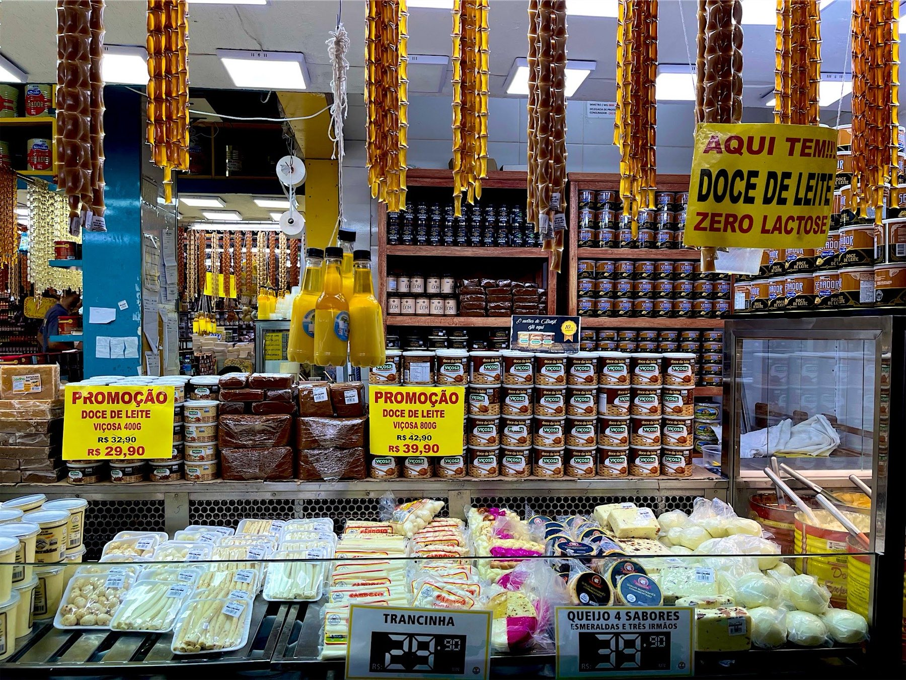
How bargaining works
Bargaining is a big part of shopping at markets and with anyone selling something who isn’t an official store — especially on the beach. Ask the price, offer less, and meet somewhere in the middle. In regular shops and malls, prices are fixed.
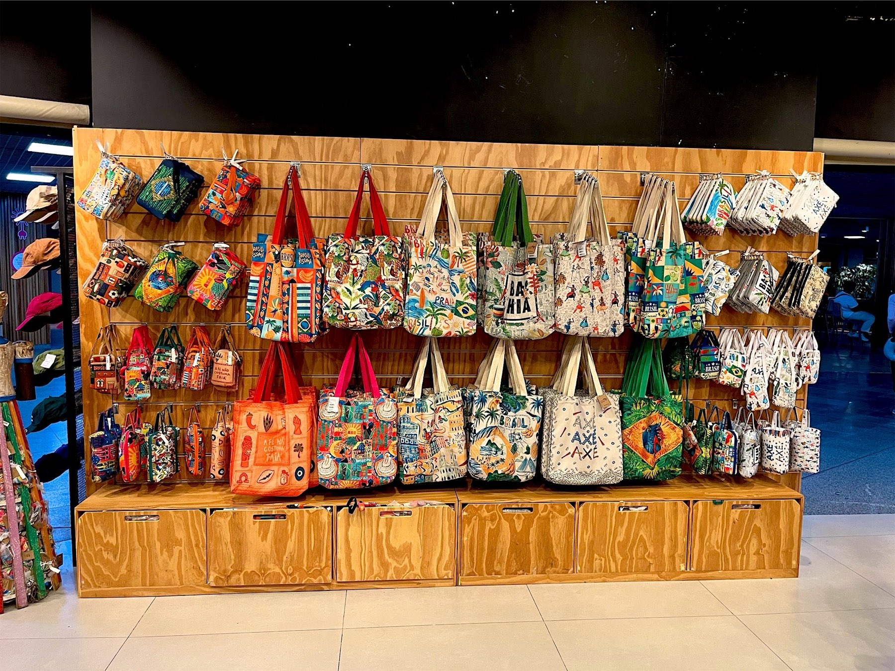
What things cost
Prices in Brazil range from very cheap to expensive. Higher-quality and designer items are priced about the same as in Europe. Handicrafts and food are much cheaper, especially compared to the U.S. — hammocks, woven bags, cushions and local sweets make great souvenirs.
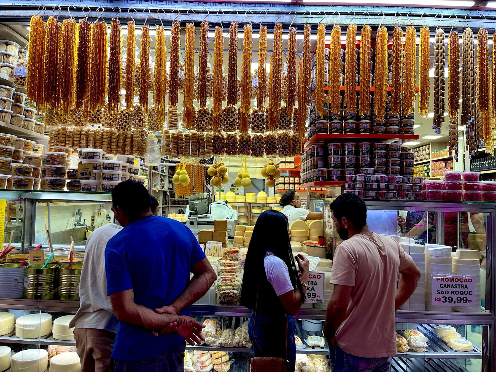
A note on how streets look
If you’re used to very polished neighborhoods, Brazilian streets may surprise you at first. There are upscale areas too, but overall the streets and houses look a bit worn — and also warm, colorful and full of soul. There are plenty of local places for every taste.

In pictures
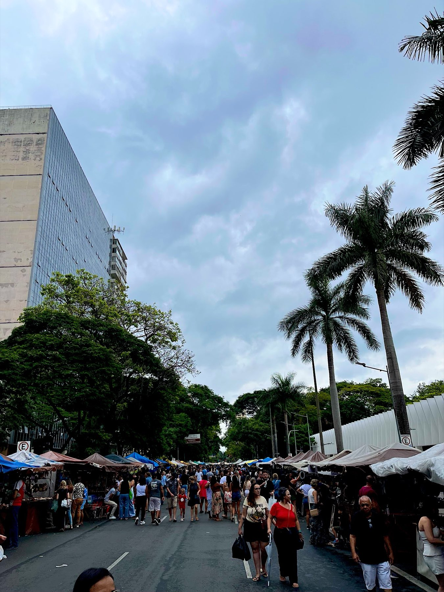
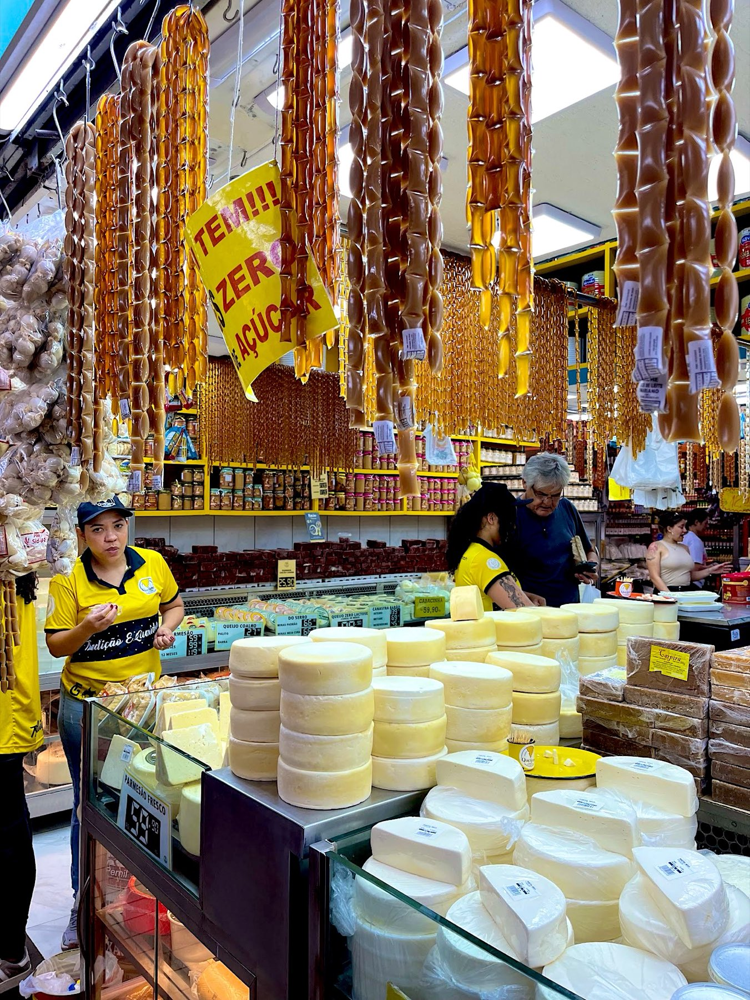
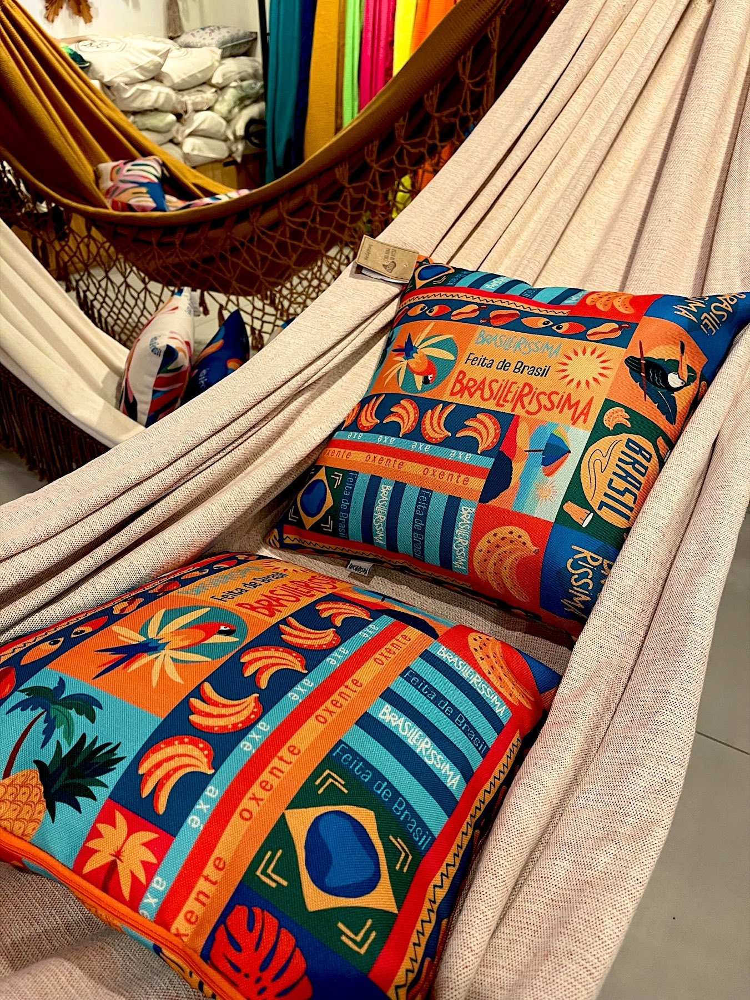
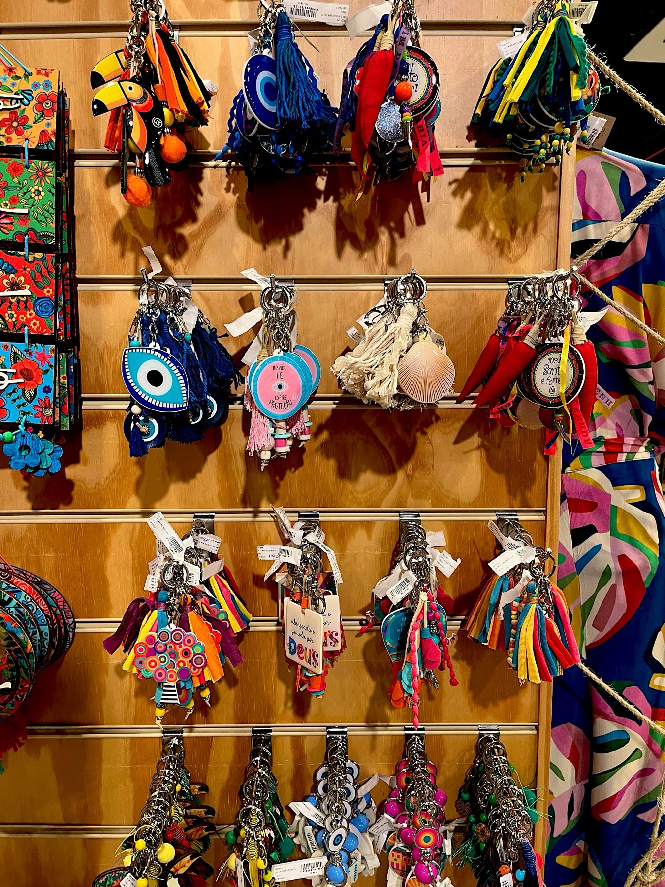
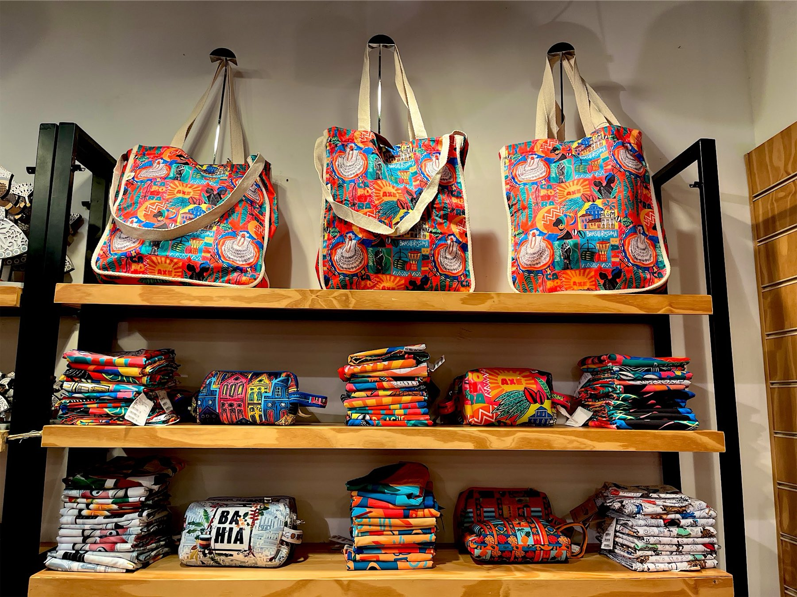
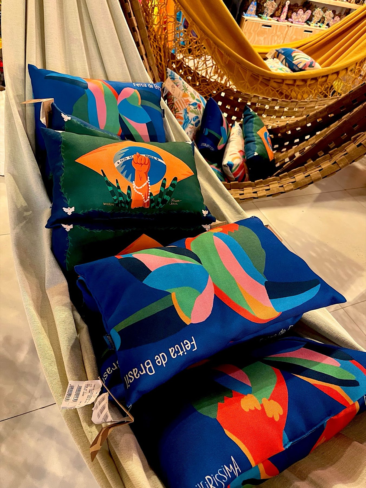
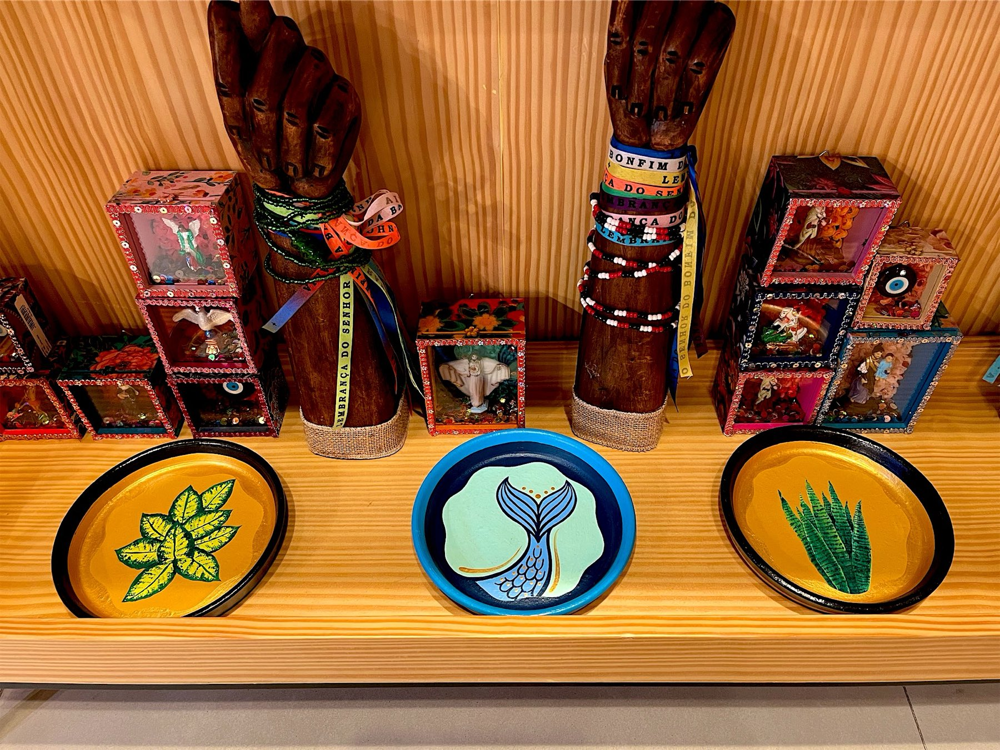
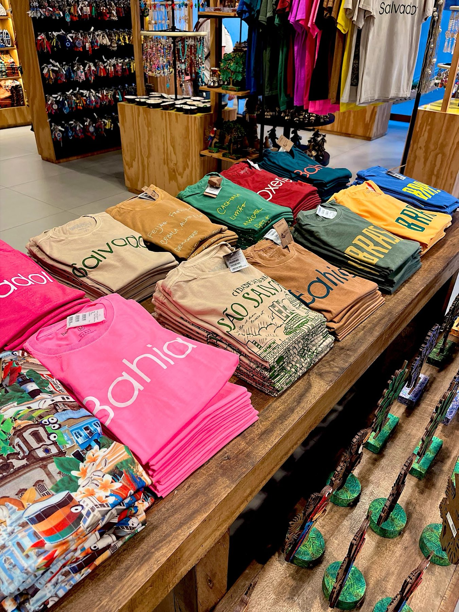
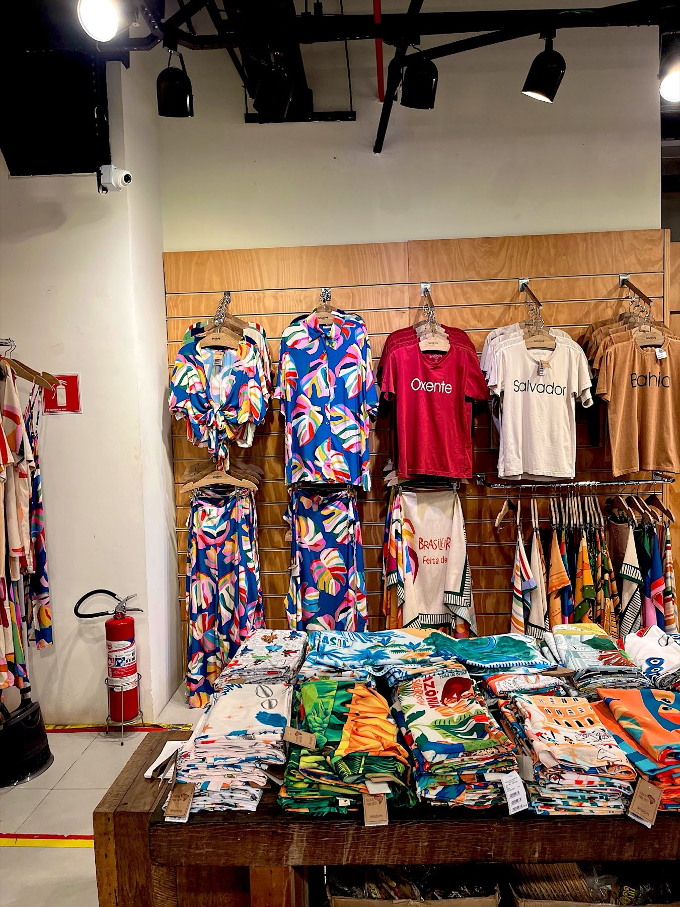
Frequently asked questions
Can you bargain in Brazil?
Yes, at markets and with street and beach vendors. Prices in official stores and malls are fixed.
Is Brazil expensive compared to the U.S.?
Food and handicrafts are much cheaper than in the U.S., while designer and high-quality goods cost roughly the same as in Europe.